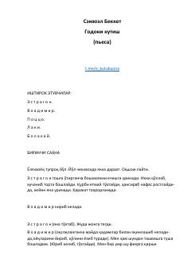

GKIkki qahramonning hech qachon kelmaydigan Godoni kutish jarayoni haqidagi falsafiy pyesa.
Samuel Bekketning ushbu mashhur pyesasi ikki qahramon — Vladimir va Estragonning mavhum bir joyda Godo ismli shaxsni kutish jarayonini tasvirlaydi. Asar inson hayotining ma'nosi, kutish va umidsizlik kabi falsafiy mavzularni absurdizm uslubida yoritib beradi.